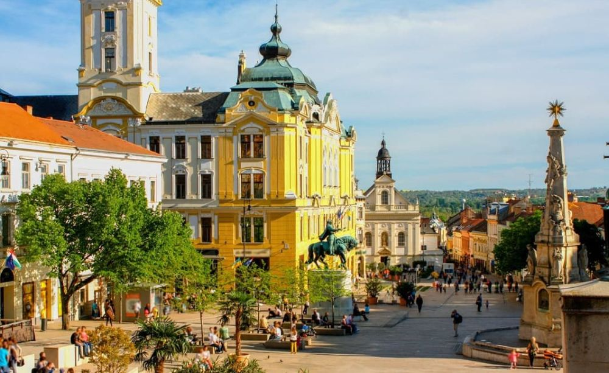

Explorați Pécs - Orașul cultural al Ungariei
Pécs, situat în sud-vestul Ungariei, este un oraș bogat în istorie, artă și cultură, oferind o varietate de atracții și experiențe captivante pentru vizitatori:
-

Catedrala - Arhitectură impresionantă
Admirați frumoasa Catedrală Pécs, un loc sacru cu o arhitectură gotică și elemente baroce.
-

Fabrica Zsolnay - Artă și ceramică
Vizitați celebrul complex Zsolnay, cunoscut pentru ceramica artistică și arhitectura sa unică.
-

Muzee - Explorare culturală
Descoperiți muzeele variate din Pécs, care prezintă arta, istoria și cultura orașului.
-

Piața Széchenyi - Centru animat
Piața centrală este locul unde se desfășoară evenimente, festivaluri și viața de zi cu zi a orașului.
-

Străzi pitorești - Farmec urban
Plimbați-vă pe străzile cu clădiri istorice și cafenele primitoare, resimțind atmosfera boemă.
Concluzii
Pécs este un oraș vibrant și cultural, unde arta și istoria se împletesc într-o experiență memorabilă.